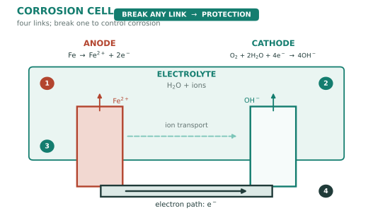
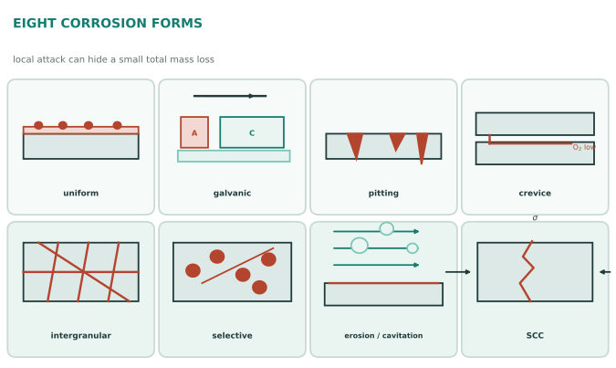

本页目录
工艺 IV · 腐蚀与防护
腐蚀每年造成的损失约占全球 GDP 的 3–4%（NACE/IMPACT 研究的量级），其中相当一部分可通过既有知识避免。腐蚀是材料回归热力学基态的过程——冶金把矿石还原成金属是逆天而行，腐蚀只是自然在讨债。本页讲清机理、八种形态、以及四类防护手段。
学习层：给一对钢—氧电极做混合电位预算，先预测面积比与边界
1. 具体材料工程情境：海水薄膜下的小阳极—大阴极电偶
把一块有局部裸露阳极的低碳钢件放在含氧电解质薄膜中，设阳极面积 \(A_a=1\ \mathrm{cm^2}\)，阴极面积为 \(A_c\)。工程师要判断：阴极面积变大是否会放大小阳极的腐蚀电流密度，阳极和阴极的极化曲线在哪里相交，以及钝化膜或氧传质上限何时让纯 Tafel 外推失效。这里的电流以 mA、面积以 \(\mathrm{cm^2}\)、电位以 V 记账。
2. 必须作答的预测门：面积比、电子守恒与 Tafel 边界
揭示前回答三题：在活化 Tafel 区增大 \(A_c/A_a\)，小阳极的腐蚀电流密度向哪边变化？混合电位交点处阳极和阴极总电流如何相等？一旦进入钝化或阴极传质限制，单纯 Tafel 直线还能否无限外推？三题完成后才显示极化图和电流账本。
3. 正式模型桥：Tafel 交点 + 面积比 + 边界平台
活化区的部分电流密度取
其中 \(i_a,i_c\) 的单位为 \(\mathrm{mA\,cm^{-2}}\)，\(b_a,b_c\) 的单位为 \(\mathrm{V/decade}\)。混合电位由总电流守恒给出
实验默认 \(E_a=-0.50\ \mathrm V\)、\(E_c=0\ \mathrm V\)、\(b_a=0.12\ \mathrm{V/decade}\)、\(b_c=0.18\ \mathrm{V/decade}\)、\(i_{0,a}=0.001\)、\(i_{0,c}=0.002\ \mathrm{mA\,cm^{-2}}\)、\(A_c/A_a=10\)。边界分支用 \(i_a^{eff}=i_{pass}\)（钝化平台）和 \(i_c^{eff}=\min(i_c,i_{lim})\)（传质上限）作教学代理；混合电位仍按 \(A_ai_a^{eff}=A_ci_c^{eff}\) 求根。由电流换算 Fe²⁺ 均匀穿透率时，采用 \(CR=3.27\,i_{corr}EW/\rho\)，其中 \(i_{corr}\) 用 \(\mathrm{mA\,cm^{-2}}\)、\(EW=27.925\ \mathrm{g/equiv}\)、\(\rho=7.87\ \mathrm{g\,cm^{-3}}\)，结果为 \(\mathrm{mm/year}\)；这还隐含 Fe → Fe²⁺ 和 100% 法拉第效率，不能把电流密度直接当成长度速率。
4. 动手实验：拖动面积比、钝化和传质上限
JavaScript 失效时的静态 fallback：默认取 \(A_a=1\ \mathrm{cm^2}\)、\(A_c/A_a=10\)、\(i_{0,a}=0.001\)、\(i_{0,c}=0.002\ \mathrm{mA\,cm^{-2}}\)，关闭钝化，\(i_{lim}=10\ \mathrm{mA\,cm^{-2}}\)。纯 Tafel 交点与有效交点都是 \(E_{mix}=-0.2063\ \mathrm V\)；\(i_a=0.2801\)、\(i_c=0.0280\ \mathrm{mA\,cm^{-2}}\)，所以 \(I_a=I_c=0.2801\ \mathrm{mA}\)，Fe²⁺ 均匀穿透率代理约 \(3.2498\ \mathrm{mm/year}\)。
| 账本量 | 静态结果 | 单位 / 读法 |
|---|---|---|
| \(E_{mix}\) | -0.2063 | V；阳极/阴极总电流相等 |
| \(i_a/i_c\) | 0.2801 / 0.0280 | mA/cm²；面积比为 10 |
| \(A_a/A_c\) | 1 / 10 | cm²；\(A_c/A_a=10\) |
| \(I_a/I_c\) | 0.2801 / 0.2801 | mA；电子守恒 |
| 净电流残差 | 约 0 | mA |
| Fe²⁺ 穿透率代理 | 3.2498 | mm/year；含 Fe²⁺、100% 法拉第效率、当量重与密度假设 |
| 边界状态 | Tafel 区 | 钝化关闭，传质上限未触发 |
5. 误区与模型边界：交点不是所有腐蚀现场的完整答案
- Tafel 直线只在相应极化区间、稳态和近似均匀表面上有用；溶液电阻、氧浓度、流速、多步反应和局部化学会改变曲线。
- 钝化不是一个普适常数平台；膜的形成、破裂、再钝化、氯离子点蚀和跨钝化区可能造成多个分支，本实验只用一个平台作可解释的边界代理。数值扫描只返回电位从低到高遇到的第一个平衡根，不描述多稳态、路径依赖或迟滞。
- 阴极传质上限依溶解氧、扩散层厚度、搅拌和几何而变；\(i_{lim}\) 不是材料固定参数。面积比放大小阳极风险的结论也要求电解质和电子通路确实连通，且阳极/阴极反应没有被其他限制步骤截断。
- 由电流到质量损失还要指定反应价态、法拉第效率、当量重和密度；混合电位本身不等于点蚀深度、SCC 寿命或局部腐蚀速率。
迁移问题：如果同一钢件换成有稳定钝化膜的不锈钢，你会先改阳极极化曲线、氧传质上限还是面积比？若总失重很小但出现深点蚀，你还需要哪些局部电流、膜状态和形貌证据？
1. 电化学机理：腐蚀是个电池
湿腐蚀 = 阳极溶解 + 阴极还原，两者电子守恒：
在这个湿腐蚀电池的简化模型中，四要素通常都要有：阳极、阴极、电解质、电子通路——断掉其中一个常可切断该电池回路，但实际构件还要检查缝隙、局部膜和旁路电流。

电位序与钝化：在指定温度、溶液和参比电极下，标准/形式电位可给出类似 Mg < Al < Zn < Fe < Sn < Cu < Ag < Au 的排序；它不是脱离环境的耐蚀性排名。实际耐蚀性还要看钝化膜、pH、氯离子、流速和缺陷：铝在许多大气条件下可因致密 Al₂O₃ 膜而比电位直觉更耐蚀；对许多 Cr-Ni 不锈钢，约 12 wt% Cr 常被视为形成连续钝化设计的经验起点，但不是所有合金/环境的硬阈值——"不锈"是膜的条件性保护，破坏后还要看能否再钝化（🔗 Pourbaix 图给出"电位-pH"平面上的免蚀/钝化/腐蚀区域，是腐蚀工程师的相图）。
2. 八种形态（按损伤形貌与机制分类，不作普适危险性排序）
| 形态 | 机理 | 典型现场 |
|---|---|---|
| 均匀腐蚀 | 全表面均匀减薄 | 碳钢大气锈蚀——通常较易用平均速率估算，但仍需检查局部化 |
| 电偶腐蚀 | 异种金属接触 + 电解质 | 铝件用不锈钢螺栓（铝可能被牺牲）——小阳极/大阴极会放大阳极电流密度 |
| 点蚀 | 钝化膜局部击穿（Cl⁻ 是元凶） | 不锈钢在海水/含氯环境——深度快、检测难 |
| 缝隙腐蚀 | 缝内贫氧 + 酸化自催化 | 法兰、垫片、螺纹下 |
| 晶间腐蚀 | 敏化：晶界析出 Cr₂₃C₆ 使贫铬 | 焊接不锈钢 HAZ（工艺 I 的欠账）——对策：304L/316L 或 321/347 稳定化 |
| 选择性腐蚀 | 合金中某组元优先溶出 | 黄铜脱锌、铸铁石墨化 |
| 磨蚀/空蚀 | 流体冲刷破坏钝化膜 | 弯头、泵叶轮、螺旋桨 |
| 应力腐蚀开裂 SCC | 拉应力 + 特定介质 + 敏感材料 | 某些奥氏体不锈钢在含氯、升温和拉应力组合下，或黄铜在含氨环境下可能发生；阈值依材料、应力和环境而变 |

加上两种"环境助攻"：氢脆（许多高强钢对氢更敏感：电镀、酸洗、阴极保护过度都可能引入氢——强度、显微组织、应力和氢逸出共同决定风险，这是高强螺栓延迟断裂的常见原因）、腐蚀疲劳（性能 II：腐蚀环境可能显著降低疲劳寿命，是否存在清晰疲劳极限依材料和环境而变）。
记忆钥匙：局部腐蚀常比均匀腐蚀更难检测和评估——因为面积小、局部速率可能高，而且工程师容易被"总失重很小"骗过；具体危险度仍由几何、载荷、检测和失效后果决定。
3. 四类防护（对应四要素）
- 材料选择/改性：耐蚀合金（对某些不锈钢家族可用 PREN = Cr + 3.3Mo + 16N 作耐点蚀的筛查指标——一个可算但不能单独定案的选材公式）、双相钢、钛（在许多海水工况表现出色，但仍需核对缝隙和流速）、耐候钢（在合适的大气暴露中形成较致密锈层）；
- 涂层与表面：有机涂层（油漆——最大量的防腐方式）、金属镀层（镀锌是牺牲阳极型：破损处仍受保护；镀锡是阻挡型，破损后反而加速铁腐蚀——两种镀层哲学的对比是本节最值得记的一课）、阳极氧化、渗铝/搪瓷；
- 电化学保护：牺牲阳极（船体挂锌/铝块、埋地管道）与外加电流阴极保护（大型储罐、管网）——把被保护件强制变成阴极；
- 环境与设计控制：除氧、缓蚀剂、降湿；设计防腐（避免异种金属直接接触、避免积液死角与缝隙、圆滑过渡、留排水口、留检修通道）——很多项目中，图纸阶段的几何和材料选择往往是成本最低的防腐机会。
4. 高温氧化（干腐蚀，一段）
高温下靠氧化膜保护：Pilling–Bedworth 比 \(PBR = V_{\text{氧化物}}/V_{\text{金属}}\) 是初步筛查膜覆盖和应力的几何指标——\(PBR < 1\) 往往难以连续覆盖，过大的 \(PBR\) 可能引入压应力和剥落风险；约 1–2 的范围有时更有利于致密膜，但不能单凭区间保证保护性。具体行为还取决于扩散、热循环、膜附着和挥发；\(x^2 = kt\) 也只在扩散控制的特定时间窗成立。
5. 数字感与反直觉
- 碳钢大气腐蚀速率常以约 0.02–0.2 mm/年作某些环境的数量级示例，但湿度、盐分、污染、温度、表面状态和排水设计会让实际值偏离；腐蚀裕量必须按暴露试验或规范确定；
- 对典型成分可把 304（PREN 约 18）、316（约 24）和 2205（约 35）作为筛查量级；它们在具体海水、缝隙、温度和焊接状态下的点蚀表现不能只由 PREN 或“海水级”标签保证；
- 反直觉四连：不锈钢会生锈（钝化膜被氯离子击穿或缺氧时）；铝比铁活泼但更耐蚀（膜的胜利）；用不锈钢螺栓固定铝件是常见的电偶腐蚀事故（面积比放大了破坏）；高强钢在防腐镀层工序中被氢脆断裂——防腐动作本身成为失效原因。
【研】对标 Jones《Principles and Prevention of Corrosion》、Fontana；混合电位理论、Tafel 极化曲线与电化学阻抗谱 EIS、SCC 机理（阳极溶解 vs 氢致）是研究生纵深。
线五收官。最后三页进入前沿了望（核对于 2026-07，保质期 1–2 年）：先进结构材料、能源材料，以及正在改变这门学科方法论的计算与 AI。